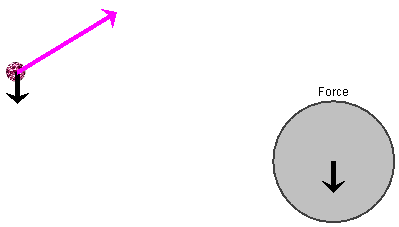
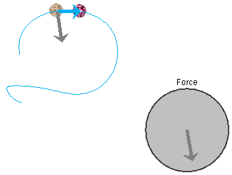
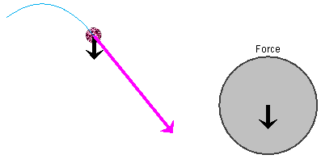
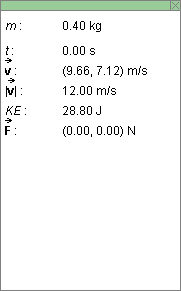
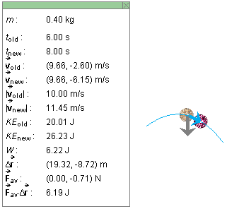
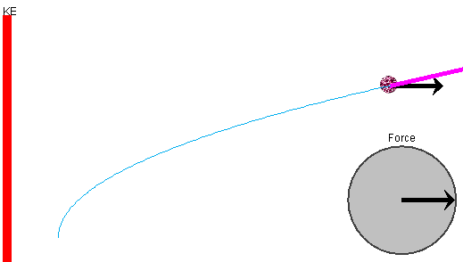
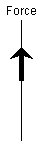

Instructions
This page is designed to get you started using the applet. The applet should be open. The step-by-step instructions on this page are to be done in the applet. You may need to toggle back and forth between instructions and applet if your screen space is limited.
 Generating a Motion By Controlling the Net Force
Generating a Motion By Controlling the Net Force
Exercise 1. RESET  the applet.
the applet.
Display the net force by selecting the Force button . No force vector is shown at this point because the net force is zero at the beginning.
Click somewhere in the Force dial, keep the mouse button depressed and drag the tip of the force vector inside the dial. This force vector is the net force acting on the particle, and you are controlling the particle's motion by controlling the net force acting on the particle.
During the resulting motion of the particle, the net force acting on the particle is represented by a black vector with its tail end at the particle. This vector is identical with the force vector in the Force dial. The particle's velocity is represented by a magenta vector. See Figure 1 below.
Figure 1
Stop the motion by releasing the mouse button. You can resume the motion by clicking in the Force dial once more. As long as the mouse button is depressed, the particle continues moving subject to the net force controlled by you in the Force dial.
After releasing the mouse button and stopping the motion, select
the Trace  button
to display the particle's path in cyan.
button
to display the particle's path in cyan.
Exercise 2. REWIND  the applet.
the applet.
Set the time step to 2.0 s by means of the Time Step slider, and STEP FORWARD through the previous motion. Figure 2 below shows what you might see after several steps. Of course, your motion may have taken a very different path.

Figure 2
The pale ball represents the particle at the beginning of the time step and the regularly painted ball the particle at the end of the time step. The displacement of the particle taken during the time step is represented by a cyan arrow, and the net force acting on the particle at the beginning of the time step is represented by a grey arrow. The net force at the end of the time step is not shown.
REWIND the applet, and STEP FORWARD through the motion once more. Observe that the net force in the Force dial is identical with the net force acting on the particle at the beginning of each time step.
STEP BACK through the motion.

Exercise 1. RESET the applet. Click on the magenta dot in the center of the particle, and drag it with the mouse to create an initial velocity vector that is not zero. Set an initial velocity that is upward and to the right, approximately at a 30o angle with respect to the horizontal as in Figure 3 below. Also drag the particle to the left to give it a new initial position.
Select the Force button. A black dot is placed at the center of the particle indicating that there is a zero net force acting on the particle. Click in the Force dial directly below the center point of the dial to create a downward pointing net force, and then immediately release the mouse button to stop the motion. Figure 3 illustrates what you can see: the downward net force (in black) acting on the particle, and the magenta velocity vector of the particle.
Figure 3
Exercise 2. Select the Trace button.
Continue the motion with the same net force by clicking on the tip of the force vector in the Force dial and holding down the mouse button. When you release the mouse button at a later moment, you might see a particle path as in Figure 4 below.

Figure 4
The particle's path is parabolic if the net force is constant.
Exercise 3. REWIND the applet, and display the data box
by selecting the Data  button. Figure 5 below illustrates the data box at
this moment.
button. Figure 5 below illustrates the data box at
this moment.

Figure 5
Set the time step to 2.0 s, and STEP FORWARD four times. For the motion illustrated in Figure 4, Figure 6 below illustrates what this step and the corresponding data box look like.

Figure 6
The symbols in the data box are explained in Help.
Exercise 1. RESET the applet. Drag out the initial velocity vector so that it points vertically upward and is as large as possible. Drag the particle to the left and downward to make room for the subsequent motion, which is up and to the right, as illustrated in Figure 7 below.
Apply a horizontal net force to the right by clicking in the Force dial. Stop the motion when the particle gets near the right edge of the applet window.

Figure 7
Note the red kinetic energy bar on the left. To obtain a bar that fits entirely inside the applet window, you may have to move the KE-Scale slider tab all the way to the left. This is what is done in the situation shown in Figure 7.
Exercise 2. With the KE-Scale slider tab all the way to the left, REWIND the applet and STEP FORWARD and BACK through the motion. Observe the changes in the height of the KE column.
Display the data box as you step through the motion, and observe the kinetic energy values at the beginning and at the end of each step, KEold and KEnew, respectively. Both increase as you step forward and KEnew > KEold in each step.
Exercise 1. RESET the applet. Select the 1D-mode by selecting the appropriate radio button . The Force dial is replaced by a vertical Force axis.
Click on the vertical Force axis, keep the mouse button depressed, and drag the tip of the net force vector up and down along the Force axis. Observe the corresponding motion of the particle. Figure 8 below illustrates a net force vector on the Force axis.

Figure 8
One can generate the same motion by using the applet's 2D mode. However, if one is interested in studying motion in one dimension only, the 1D mode makes it easier to generate a net force along the direction of motion of the particle and thus keep the particle moving in a straight line.
Exercise 2. REWIND the applet. STEP FORWARD and BACK through the motion, and carry out observations similar to those performed earlier in the 2D mode.